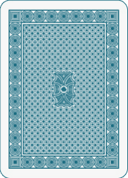
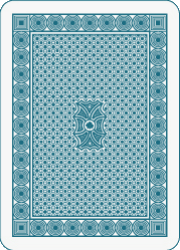
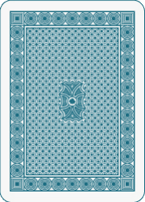
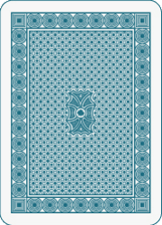

Blackjack - simple version - gReg
 



Do gry mogą przystąpić dwie osoby. Gracze grają 1 talią kart 9-As. Gracze grają kolejno po sobie. Gracz otrzymuje na start 1 kartę a następnie może dobierać kolejne. Jeżeli gracz stwierdzi, że nie chce więcej kart, bo uzyskał już satysfakcjonujący go wynik, to następny gracz rozpoczyna swoją turę. Gracz powinien wycofać się wtedy, gdy zgromadzi 21 oczek lub ich liczba będzie im jak najbliższa. Ale tutaj uwaga – każde przekroczenie 21 punktów (nawet o 1) jest traktowane jako przegrana. Po zakończeniu kolejki porównujemy wyniki i osoba, która uzyskała 21 oczek lub była im najbliższa wygrywa. Aby nie dopuszczać do remisów ustalamy priorytet koloru kart graczy, tzn. wygrywa gracz posiadający wyższą kartę kier.
Oczka to punkty przypisane każdej karcie. Ich podział wygląda następująco:
Z pierwszej ręki dostaliśmy damę – mamy 3 punkty. Gramy dalej i jako drugą kartę dostaliśmy waleta – razem 5 punktów. Za trzecim podejściem otrzymaliśmy 10 – razem 15 punktów. Z tak niskim wynikiem nie ma co się wycofywać, dlatego gramy dalej i tym razem, pechowo dostajemy asa – razem zdobywamy 26 punktów i przegrywamy turę. Nasz przeciwnik w tym samym czasie wylosował 9-9-walet, czyli uzyskał 20 punktów po czym zrezygnował z dalszej gry i w ten sposób wygrał rozgrywkę.